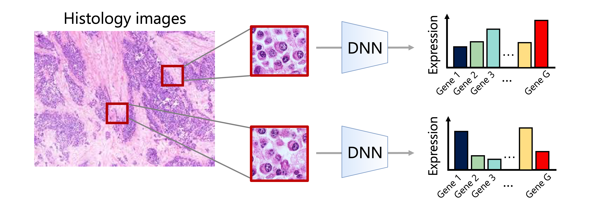

Research concept figure
Place your image at
assets/images/ider_concept.png
Task. Histology-based spatial gene expression prediction aims to estimate gene expression from tissue images, potentially enabling molecular analysis without direct gene measurements.

Predicting spatial gene expression from histology images.
Conventional approaches. Existing methods primarily focus on reconstructing the spatial expression patterns of individual genes. However, accurate reconstruction does not necessarily preserve the ranking of genes that distinguish different tissue regions.
Our approach (IDER). We introduce image-based differential expression ranking (IDER), which explicitly aims to preserve the ranking of genes based on their expression differences between tissue regions. By optimizing this ranking during training, IDER better supports downstream gene discovery.
assets/images/ider_concept.png